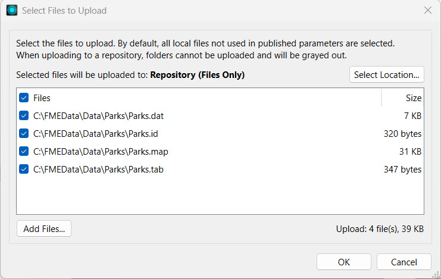
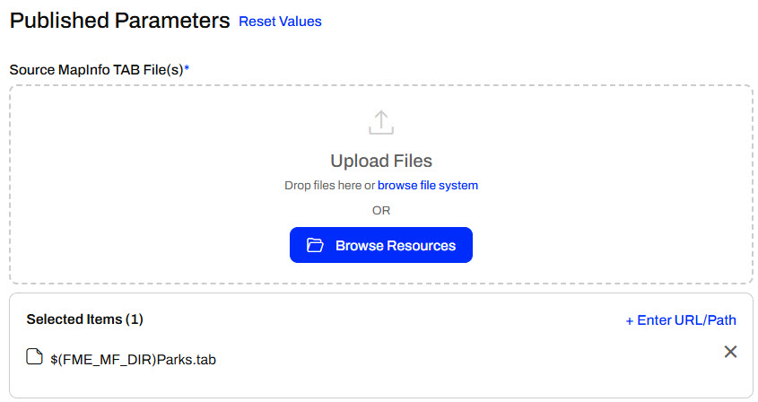
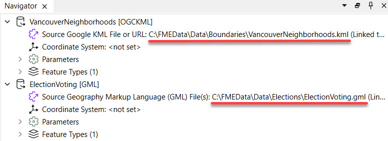
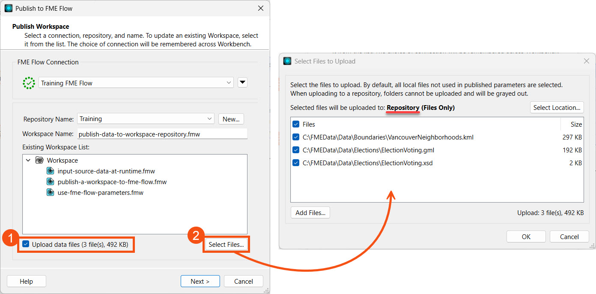
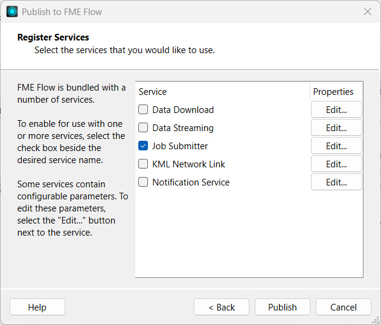
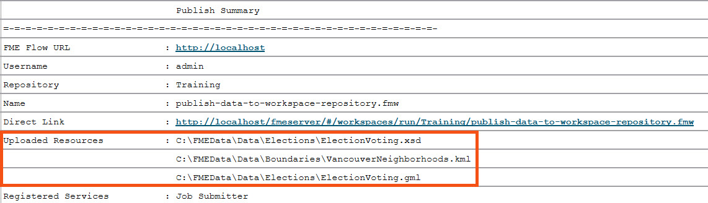
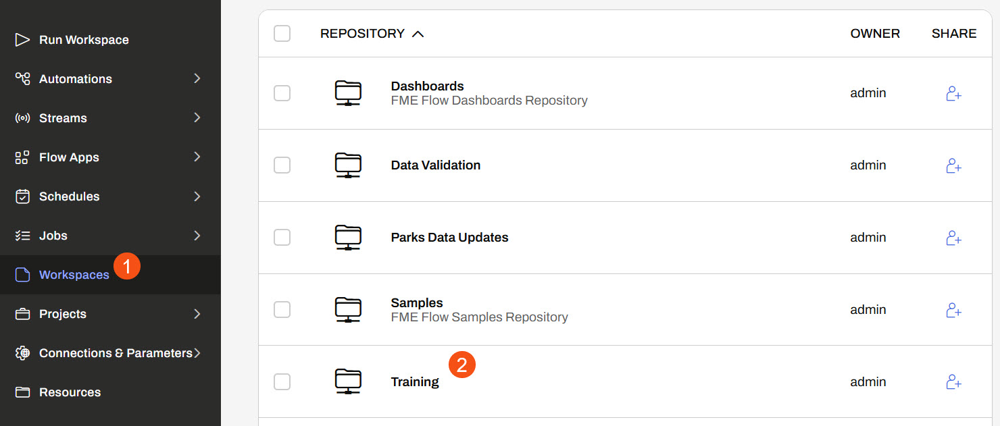
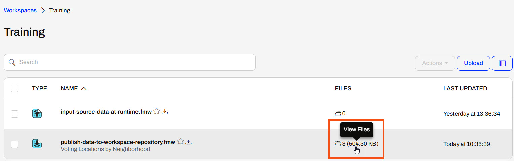
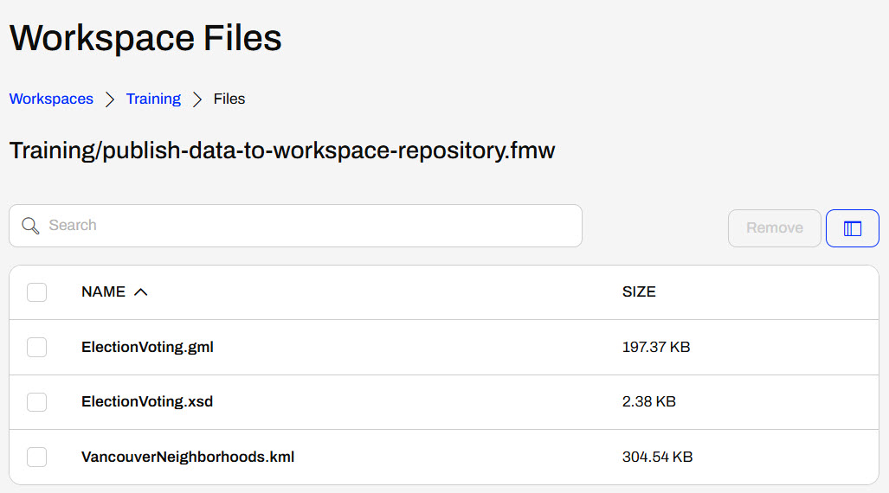
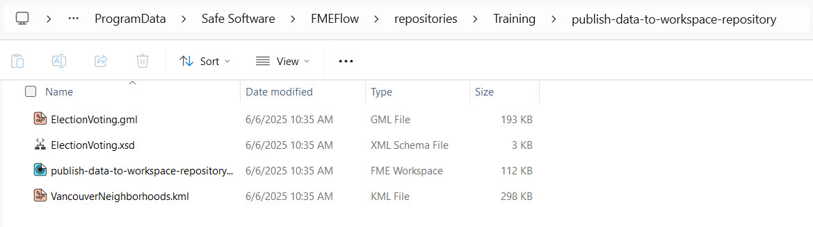

One of the simplest methods for storing source data for FME Flow workspaces is publishing data to a repository. When the source data for a translation is file-based (rather than a feed or database), you may publish the data to an FME Flow repository along with the workspace. This data upload method is fast and straightforward, but it limits future access to the data for other workflows. It's better practice to publish your data in the Resources folder, separate from the workspace, which you will learn in the next lessons.
Source file datasets are often stored locally on the computer that hosts FME Workbench. However, another server usually hosts FME Flow, so local file paths to datasets usually fail on FME Flow because the data doesn't exist in that location on the FME Flow server.
In this workspace, the source dataset is a MapInfo TAB dataset stored on the local computer drive.
A MapInfo TAB dataset consists of a series of files (.tab, .dat, .id, .map). When you publish this workspace, the publishing wizard can publish the data files alongside it by simply checking the box labeled "Upload data files."
FME automatically selects the files to upload based on what it thinks is necessary to run the translation. If there are other files you wish to upload, or files FME selects that you don't want to upload, the Select Files button allows you to make changes.

At the top, it also shows that the selected files will be uploaded to the Repository, the same repository folder as the workspace.
Once the publishing wizard is complete, FME uploads the files to FME Flow, which makes them accessible along with this workspace.
When you run a workspace published with its data on FME Flow, the uploaded data is automatically used as the workspace's source data. The $(FME_MF_DIR) parameter references the repository for the selected workspace.

To use the uploaded data in the repository, you do not need to change any other settings; the workspace will run to completion using the published data as its source.
There are some cautions and limitations to consider when you upload data to a workspace repository:
Sven continues working with his workspace, which clips voting locations to neighborhoods in Vancouver and stores the transformed data in a geodatabase. He is working with the source GML and KML data and is experimenting with finding the best location to store the data when the workspace is run on FME Flow.
Follow along with Sven as he publishes the workspace and its source data to a repository on FME Flow and then runs the workspace on FME Flow using the published data.
Sven opens his workspace (C:\FMEData\Workspaces\DeployWorkflowsWithFMEFlow\publish-data-to-workspace-repository.fmw) in FME Workbench.
In FME Workbench, Sven expands the parameters for each reader. The source files are stored locally on his computer. For testing on an FME Flow installed locally on his machine, FME Flow can access these files. However, an organizational FME Flow deployment usually won't have access to local file systems except for the server on which it is installed.

Sven clicks publish in the top toolbar to open the publishing wizard.

He selects the Training repository, creates it if needed, and leaves the workspace name as the default. He clicks Upload data files and notes that FME automatically selects the three files. He clicks Select Files... to inspect them.

Although the workspace only has a GML and KML writer, FME also includes the XSD (XML Schema Definition) file to support the GML file. Sven checks that FME will upload the files to the Repository, clicks OK, and then clicks Next to proceed to the next step.
Sven registers the workspace with the Job Submitter service and clicks Publish.

Sven checks the translation log to ensure the publishing process reports the files uploaded to FME Flow.

Sven navigates to FME Flow. He opens Workspaces and clicks the Training repository to open it.

Sven sees three files listed in the Files column for his workspace and clicks on them to view them.

Workspace Files lists the files published to the repository along with the workspace.

Sven clicks Training in the top path to return to the repository list of workspaces. He then clicks on his workspace to open it on the Run Workspace page.
The Run Workspace page already has the workspace details entered. Sven scrolls down to the Published Parameters section.
By default, FME Flow selects the repository files for each source file. FME Flow indicates this by the ($FME_MF_DIR) parameter.

Sven doesn't alter any parameters and clicks Run to run the workspace. The workspace reads the source files from the repository location and runs successfully.
Since Sven has access to the FME Flow computer itself, he opens a file browser and browses to the location where FME Flow stores the repository data. The default location is C:\ProgramData\Safe Software\FMEFlow\repositories\Training, which is consistent with the Safe Software training machines.

Sven sees that FME Flow saves each workspace to a separate folder. He inspects the contents of the publish-data-to-workspace-repository folder and sees the uploaded datasets within it.
Windows may hide ProgramData and files in the FME Flow folder. Make sure you turn on hidden files and folders if you wish to view them.
Sven has successfully published source data to a repository on FME Flow. However, he might use the source file data, especially VancouverNeighborhoods.kml, for many workspaces, so storing it multiple times with individual workspaces doesn't make sense. Next, Sven will learn how to publish data to Resources instead.